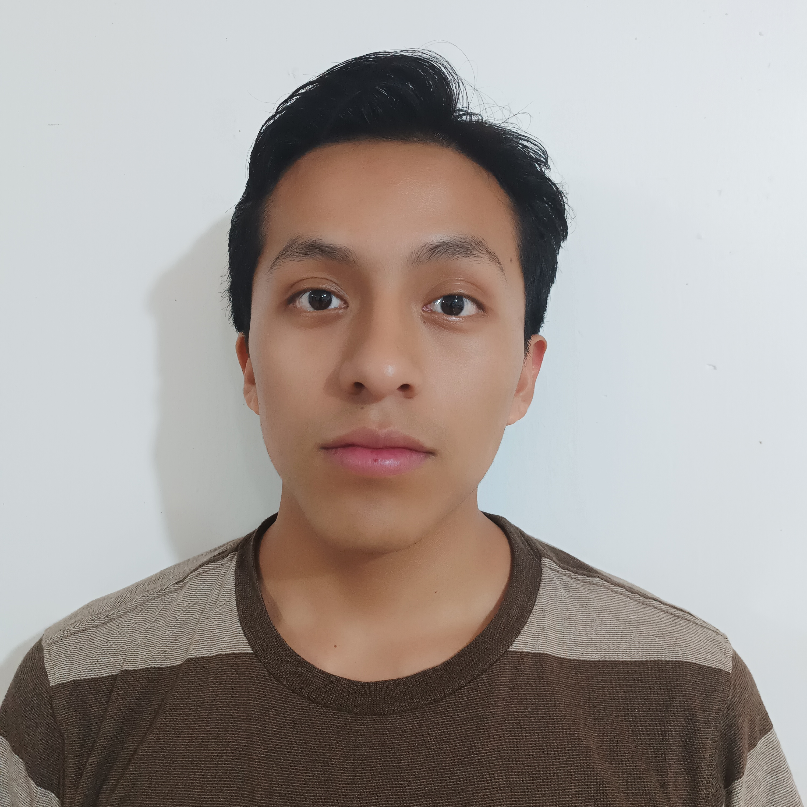

Yanny Alexande Arellano Burga | WWD 130
My name is Yanny Arellano. I'm from Otavalo, Ecuador. A brief description of myself: I enjoy playing soccer with my friends and listening to country music. One of my hobbies is playing the guitar and singing. I had the privilege of serving as a missionary in the Ecuador Guayaquil South Mission. Currently, I am learning a lot about programming through BYU-Idaho's online program.